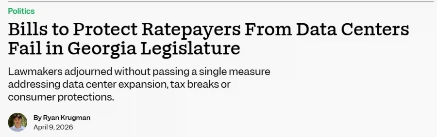
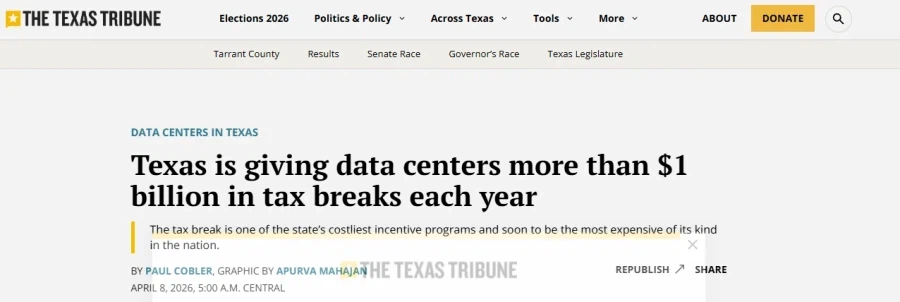
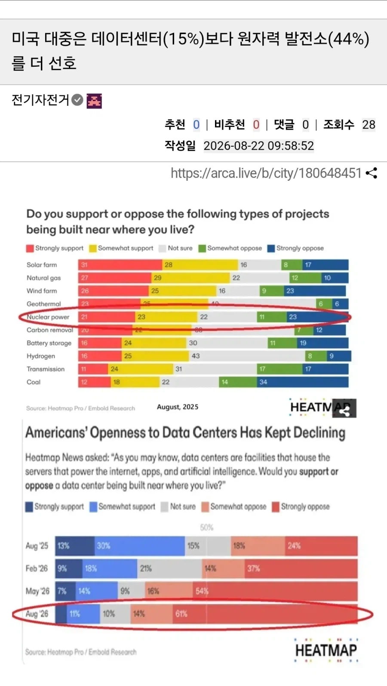
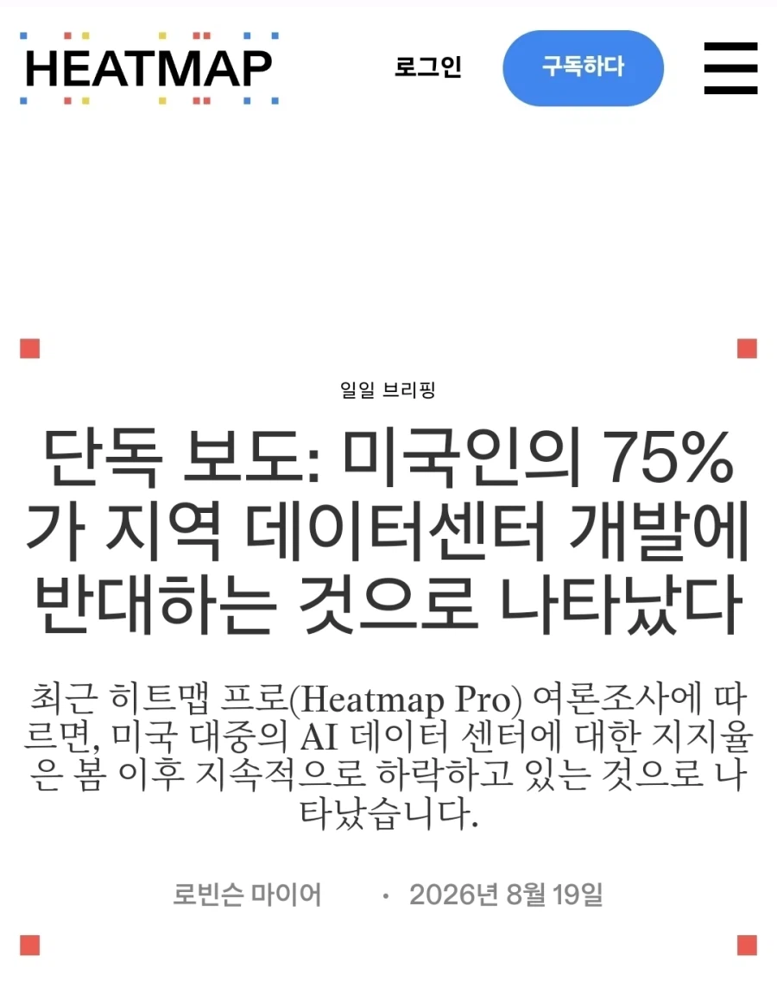

데이터센터 사업자들이 전기료 감세와 면세 혜택을 누리고 있지만 그 원래 내야 했던 전기료와 수도세 등은 전부 지역 주민들이 사실상 떠맡아버린 수준이라
참다못한 주의회에서 이거 컷하려고 시도하니까 공화당 주정부 측이 막아버림

데이터센터 사업자들에게 세금혜택 준다고 연간 1억 달러 가까이 퍼주면서
정작 세금헤택 주면서 약속했던 고용창출 등은 전혀 해주지 않아
13억 달러 세수 손실을 보고 있는데도 공화당 주정부는 흐린눈 하는 중
여기서도 자주 봤을 소음 문제
심지어 이게 24시간 내내 돌아가서 민원이 빗발치는데도 주정부 측에서 단 하나의 규제나 조치도 없음
위의 이유 때문에 주민들이 집 근처에 들어오는 거 싫다고 하니까
기밀유지니 뭐니 하면서 안 짓는 척 하면서 속이다가 완공되니 꼬우면 니들이 나가라면서 주민들 보고 배짱장사하기


그 결과로 미국 국민들 사이에서 데이터센터가 원전보다 최악인 혐오시설로 낙인찍혀 버림
심지어 이건 좌우 가리지 않고 이미 전국적인 현상에다
이미 미국 국민들부터가 빅테크들 개짓거리로 데이터센터 ㅈ같아하는 건 좌우를 가리지 않게 오래 됨
당장 이번 주지사 선거 후보들 보면 공화당 후보들조차 대다수가 데이터센터 규제안 들고왔음
댓글
수집 당시 댓글 200개
· S＆P500 · 11.05 23:23:18
· ㅇㅇ · 11.05 23:24:57
ㅇㅇ · 11.05 23:21:15
· ㅇㅇ · 11.05 23:21:31
에휴
ㅇㅇ · 11.05 23:21:16
· ㅇㅇ · 11.06 01:45:18
S＆P500 · 11.05 23:22:56
ㅇㅇ · 11.05 23:22:57
ㅇㅇ · 11.05 23:23:01
ㅇㅇ · 11.05 23:23:31
Adriel · 11.05 23:24:16
· Adriel · 11.05 23:24:23
Doll · 11.05 23:24:18
ㅇㅇ · 11.05 23:24:23
ㅇㅇ · 11.05 23:24:52
ㅇㅇ · 11.05 23:24:53
ㅇㅇ · 11.05 23:25:17
ㅇㅇ · 11.05 23:25:21
ㅇㅇ · 11.05 23:25:23
· ㅇㅇ · 11.05 23:28:29
ㅇㅇ · 11.05 23:26:35
1111 · 11.05 23:27:58
ㅇㅇ · 11.05 23:28:12
ㅇㅇ · 11.05 23:28:13
· ㅇㅇ · 11.05 23:29:36
· ㅇㅇ · 11.05 23:30:07
· ㅇㅇ · 11.05 23:30:33
· ㅇㅇ · 11.05 23:32:41
ㅇㅇ · 11.05 23:28:17
ㅇㅇ · 11.05 23:28:44
ㅇㅇ · 11.05 23:29:14
ㅇㅇ · 11.05 23:29:25
· ㅇㅇ · 11.05 23:50:56
ㅇㅇ · 11.05 23:30:26
· ㅇㅇ · 11.06 00:56:10
ㅇㅇ · 11.05 23:31:49
ㅇㅇ · 11.05 23:34:58
ㅇㅇ · 11.05 23:37:00
ㅇㅇ · 11.05 23:37:54
ㅇㅇ · 11.05 23:38:04
ㅇㅇ · 11.05 23:39:20
· ㅇㅇ · 11.06 01:25:56
ㅇㅇ · 11.05 23:40:05
ㅇㅇ · 11.05 23:42:49
ㅇㅇ · 11.05 23:44:13
ㅇㅇ · 11.05 23:44:23
ㅇㅇ · 11.05 23:48:11
Neikos496 · 11.05 23:50:46
천년군주 · 11.05 23:52:15
· 천년군주 · 11.05 23:53:28
· ㅇㅇ · 11.06 00:23:19
· 천년군주 · 11.06 01:48:42
· ㅇㅇ · 11.06 02:24:10
· 천년군주 · 11.06 02:25:25
· ㅇㅇ · 11.06 04:36:23
· 천년군주 · 11.06 06:15:20
· 천년군주 · 11.06 06:16:10
· ㅇㅇ · 11.06 11:04:37
ㅇㅇ · 11.05 23:57:09
ㅇㅇ · 11.05 23:58:02
ㅇㅇ · 11.06 00:05:34
ㅇㅇ · 11.06 00:12:34
· ㅇㅇ · 11.06 01:26:29
· ㅇㅇ · 11.06 04:41:44
· ㅇㅇ · 11.06 15:31:28
ㅇㅇ · 11.06 00:13:59
oo · 11.06 00:15:06
oo · 11.06 00:15:40
환란 전 교회 휴거 · 11.06 00:16:59
ㅇㅇ · 11.06 00:25:59
ㅇㅇ · 11.06 00:32:30
ㅇㅇ · 11.06 00:33:17
ㅇㅇ · 11.06 00:45:34
ㅇㅇ · 11.06 00:55:28
ㅇㅇ · 11.06 01:35:43
· ㅇㅇ · 11.06 01:37:23
ㅇㅇ · 11.06 01:36:44
· ㅇㅇ · 11.06 01:36:49
ㅇㅇ · 11.06 01:48:36
· ㅇㅇ · 11.06 04:43:48
ㅇㅇ · 11.06 01:51:01
· ㅇㅇ · 11.06 02:02:17
Futechs · 11.06 02:30:58
ㅇㅇ · 11.06 02:50:49
· ㅇㅇ · 11.06 15:33:26
ㅇㅇ · 11.06 02:52:24
· ㅇㅇ · 11.06 04:42:17
ㅇㅇ · 11.06 03:11:44
링타로 · 11.06 03:12:52
ㅇㅇ · 11.06 04:44:59
· ㅇㅇ · 11.06 05:26:27
· ㅇㅇ · 11.06 07:22:23
· ㅇㅇ · 11.06 07:23:17
ㅇㅇ · 11.06 05:04:17
ㅇㅇ · 11.06 05:17:18
· ㅇㅇ · 11.06 15:34:46
ㅑㅂㄷ · 11.06 07:23:08
ㅇㅇ · 11.06 08:33:20
원또 · 11.06 09:15:44
JungNu · 11.06 20:59:19
· ㅇㅇ · 11.05 14:16:20
박노이호 · 11.05 13:18:42
ㅇㅇ · 11.05 13:25:19
ㅇㅇ1 · 11.05 13:28:04
· ㅇㅇ2 · 11.05 13:35:41
· ㅇㅇ · 11.05 13:38:45
· ㅇㅇ1 · 11.05 13:39:23
· ㅇㅇ · 11.05 13:39:36
· ㅇㅇ1 · 11.05 13:40:05
· ㅇㅇ1 · 11.05 13:41:55
· ㅇㅇ3 · 11.05 13:43:57
· ㅇㅇ1 · 11.05 13:44:35
· ㅇㅇ1 · 11.05 13:46:01
· ㅇㅇ5 · 11.05 13:48:31
· ㅇㅇ1 · 11.05 13:49:38
· ㅇㅇ3 · 11.05 13:49:40
· ㅇㅇ6 · 11.05 13:50:55
· ㅇㅇ2 · 11.05 13:51:38
· ㅇㅇ1 · 11.05 13:54:02
· ㅇㅇ5 · 11.05 13:59:54
· ㅇㅇ1 · 11.05 14:04:11
· ㅇㅇ7 · 11.05 14:06:04
· ㅇㅇ1 · 11.05 14:10:20
· ㅇㅇ3 · 11.05 14:10:59
· ㅇㅇ7 · 11.05 14:11:52
· ㅇㅇ8 · 11.05 14:13:51
· ㅇㅇ8 · 11.05 14:23:39
· ㅇㅇ · 11.05 23:12:16
· ㅇㅇ · 11.05 23:19:08
· S＆P500 · 11.05 23:23:02
· ㅇㅇ · 11.05 23:23:28
· ㅇㅇ · 11.05 23:30:37
· ㅇㅇ · 11.05 23:31:57
· ㅇㅇ · 11.05 23:58:10
Kokone · 11.05 13:37:46
깡계10호 · 11.05 13:37:47
울엄마 · 11.05 13:42:03
Azurespace · 11.05 13:46:13
하이요 · 11.05 13:46:29
ㅇㅇ4 · 11.05 13:47:36
ㅇㅇ · 11.05 13:52:56
ㅇㅇ7 · 11.05 14:06:48
· ㅇㅇ9 · 11.05 14:25:44
· ㅇㅇ11 · 11.05 14:29:35
· ㅇㅇ · 11.05 23:12:26
독라중기병 · 11.05 14:19:38
· 독라중기병 · 11.05 14:19:47
· ㅇㅇ10 · 11.05 14:27:42
산시야 · 11.05 14:27:52
ㅇㅇ · 11.05 14:35:54
ㅇㅇ · 11.05 15:43:11
땨뗘(봇) · 11.05 23:10:06
ㅇㅇ · 11.05 23:11:02
· ㅇㅇ · 11.05 23:11:19
· 프븨 · 11.05 23:17:37
· ㅇㅇ · 11.05 23:18:27
· ㅇㅇ · 11.05 23:37:33
· ㅇㅇ · 11.05 23:41:27
ㅇㅇ · 11.05 23:11:48
ㅇㅇ · 11.05 23:11:55
ㅇㅇ · 11.05 23:12:24
· ㅇㅇ · 11.05 23:12:41
· 베이린 · 11.05 23:30:07
· ㅇㅇ · 11.05 23:54:32
환사타이다 · 11.05 23:12:57
· 프븨 · 11.05 23:15:51
ㅇㅇ · 11.05 23:13:27
ㅇㅇ · 11.05 23:13:46
안락사 · 11.05 23:13:49
착한말만 · 11.05 23:15:33
· ㅇㅇ · 11.06 00:31:41
ㅇㅇ · 11.05 23:15:37
· ㅇㅇ · 11.05 23:26:19
· ㅇㅇ · 11.06 05:26:15
ㅇㅇ · 11.05 23:16:07
· ㅇㅇ · 11.05 23:25:40
· ㅇㅇ · 11.06 01:56:16
ㅇㅇ · 11.05 23:16:08
ㅇㅇ · 11.05 23:16:33
· ㅇㅇ · 11.06 02:53:25
ㅇㅇ · 11.05 23:16:34
· ㅇㅇ · 11.05 23:16:45
· ㅇㅇ · 11.05 23:16:52
ㅇㅇ · 11.05 23:17:43
ㅇㅇ · 11.05 23:17:50
ㅇㅇ · 11.05 23:18:03
· ㅇㅇ · 11.05 23:18:09
ㅇㅇ · 11.05 23:19:24
ㅇㅇ · 11.05 23:19:28
· ㅇㅇ · 11.05 23:20:23
· ㅇㅇ · 11.05 23:32:05
ㅇㅇ · 11.05 23:19:34
ㅇㅇ · 11.05 23:19:50
· ㅇㅇ · 11.05 23:32:52
ㅇㅇ · 11.05 23:19:54
ㅇㅇ · 11.05 23:20:35
· ㅇㅇ · 11.05 23:21:35
ㅇㅇ · 11.05 23:20:37
· ㅇㅇ · 11.05 23:20:41
ㄹㅇㅋㅋ
· ㅇㅇ · 11.05 23:21:39